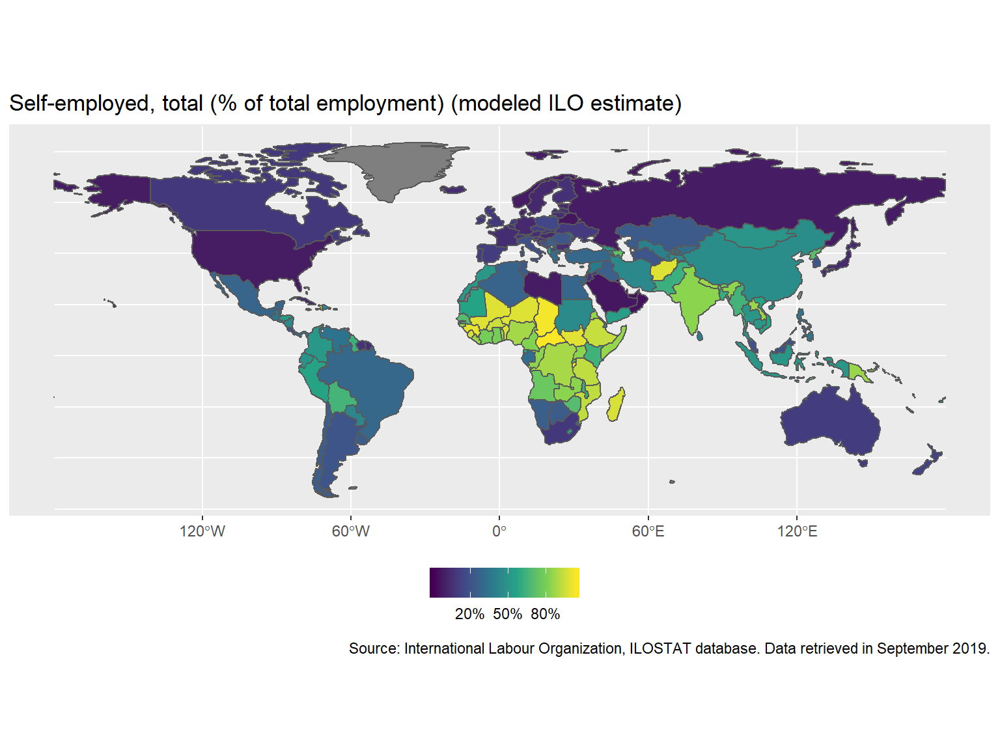

ggplot2 to map wbstats datalibrary(rnaturalearth)
library(tidyverse)
library(wbstats)
ind <- "SL.EMP.SELF.ZS"
indicator_info <- filter(wb_cachelist$indicators, indicator_id == ind)
ne_countries(returnclass = "sf") %>%
left_join(
wb_data(
c(self_employed = ind),
mrnev = 1
),
c("iso_a3" = "iso3c")
) %>%
filter(iso_a3 != "ATA") %>% # remove Antarctica
ggplot(aes(fill = self_employed)) +
geom_sf() +
scale_fill_viridis_c(labels = scales::percent_format(scale = 1)) +
theme(legend.position="bottom") +
labs(
title = indicator_info$indicator,
fill = NULL,
caption = paste("Source:", indicator_info$source_org)
)